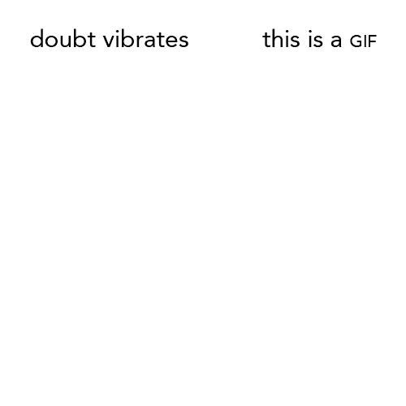

Doubt Vibrates
What can the page offer to the GIF and what can the GIF offer back to the codex? I resist 20th century tendencies toward concrete poetry and its Flash-media successors. Instead, I am interested in how to emphasize the tendencies of poetic language, not only visually but verbally and haptically. While retaining print's minimalism, the GIF's frames can encourage the action of the line break, as meaning evolves from line to line, turning over on itself. The low-res scale enforces poetry's compression, and the imperative of the loop demands poetry's attentive (re)reading. The GIF makes the page a Mobius strip. It pauses and extends the present in exhaustive instant replay. Its flicker floods the sensory until it becomes aural and tactile, making blankness echo, making everything else seem "more still." In contrast to the immediacy of its presentation, the practice of GIF creation is a slow-motion experience akin to lead typesetting or weaving. The technical constraints of GIF poems dictate a layered, linear, destructive-editing relationship with language that slowly accumulates.